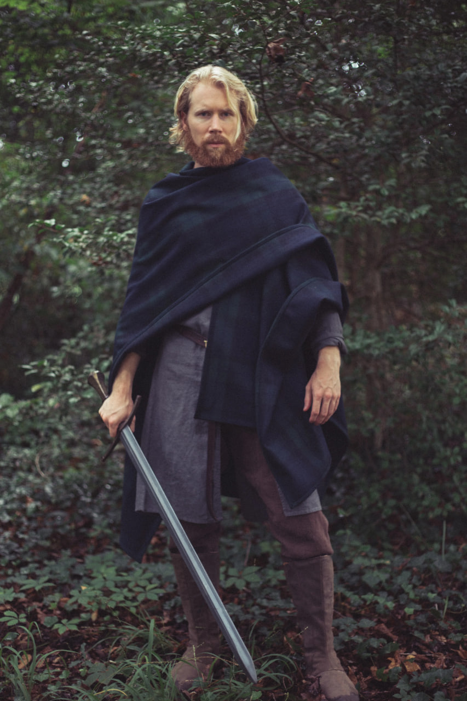
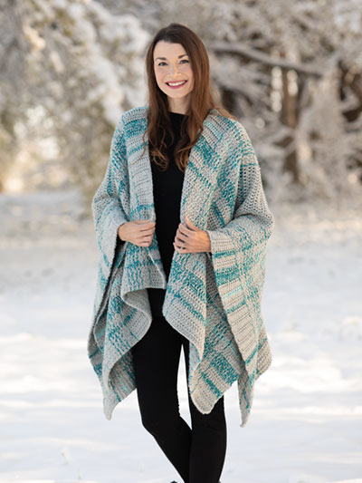

Ruana is basically a cloak made out of rectangular or a square fabric. It's a lot like poncho, but it has additional cut made through one side.
It's a lot easier to do and at the same time it seems like the most effective cloak.
When it comes to wearing it, there are plenty of options to choose from.
 